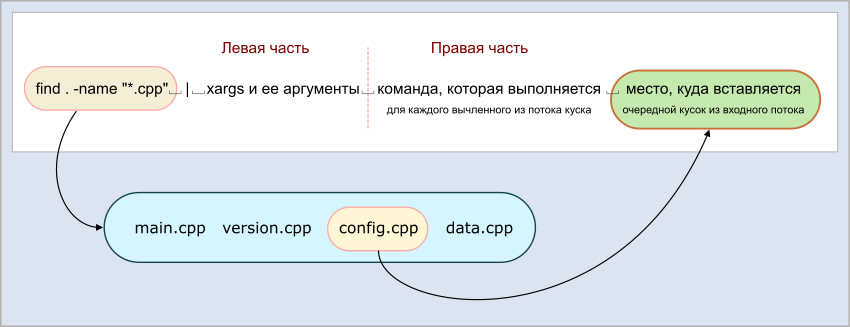

В Linux существует очень странная команда xargs, которую весьма любят гуру, но не спешат объяснять как она работает. Интернет завален рецептами "как пользоваться xargs", но ни в одном из них внятно не написано самого главного: что эта команда вообще делает.
Самое главное
В общих чертах везде написано одно и то же: команда xargs принимает входной поток (именно поэтому ее всегда предваряет какая-нибудь команда и символ перенаправления потока "|"), и каким-то волшебным синтаксисом выполняет указанную в ней команду.
На самом деле команда xargs делает вот что. (Попробую сформулировать предельно беспристрастно). Она разбивает поток символов, направляемых в нее, на куски. Для разбиения потока она использует символы-разделители. И для каждого выделенного куска она выполняет команду, которая указана в правой части, дополняя справа эту команду символами найденного куска.
Теперь то же самое, но с картинками. Синтаксически команда xargs состоит как бы из двух частей - левой и правой:
Причем однозначного визуального разделения, где левая, а где правая часть, просто нет. Если вы пытаетесь понять написанную другим человеком команду xargs, эту "границу раздела" нужно уметь находить самостоятельно. Вот несколько примеров:
|
Полная команда |
Левая часть |
Правая часть |
Примечание |
|
xargs rm -rf |
xargs |
rm -rf |
|
|
xargs -0 rm -rf |
xargs -0 |
rm -rf |
|
|
xargs -p -l gzip |
xargs -p -l |
gzip |
|
|
xargs tar -zcf pl.tar.gz |
xargs |
tar -zcf pl.tar.gz |
|
|
xargs -n2 fmv |
xargs -n2 |
fmv |
|
|
xargs -I file mv |
xargs -I file |
mv |
Да, тут нет ошибки |
|
xargs chown temp |
xargs |
chown temp |
|
|
xargs kill -9 |
xargs |
kill -9 |
|
|
xargs -p vim |
xargs -p |
vim |
То есть, здесь действует правило: если после xargs идут символы, предваряемые знаком минус "-", значит это опции команды xargs. Как только пошли символы без знака минус, значит это уже символы правой части. Но нужно учитывать, что некоторые опции xargs требуют после себя еще каких-то данных, которые не будут предваряться знаком минус (см. пример с опцией -I).
А теперь самое главное: какую же команду выполняет xargs? Куда она пихает пачку символов, которую она вычленила во входном потоке? Все просто: она кладет эти символы справа от команды, прописанной в правой части. Понимаю, тут два раза используется "право". Тогда вот картинка, которая все расставляет на свои места:

Возьмем конкретный пример. В каталоге лежат файлы:
main.cpp
main.h
version.cpp
version.h
config.cpp
config.h
data.cpp
data.h
Внутри этого каталога выполняется команда:
find . -name "*.cpp" | xargs rm -rf
Какие команды сгенерирует xargs? Чтобы ответить на это, нужно понять, что будет подано на ее вход. А на вход будет подан результат работы команды find:
./main.cpp
./version.cpp
./config.cpp
./data.cpp
Команда xargs по-умолчанию считает разделителем три вещи: пробел, табуляцию, перевод строки (или их непрерывные последовательности). Таким образом, в итоге будут выполнены четыре команды:
rm -rf ./main.cpp
rm -rf ./version.cpp
rm -rf ./config.cpp
rm -rf ./data.cpp
Команда xargs без аргументов
Иногда можно встретить обескураживающую конструкцию, типа:
tr -dc A-Za-z0-9_ < /dev/urandom | head -c 10 | xargs
Данная команда генерирует случайны пароль длиной 10 символов. Но что значит команда xargs без аргументов в конце этой команды?
Ответ прост. Команда xargs без аргументов на самом деле считает, что в ее правой части стоит команда echo. И пропускает входящий поток через команду echo